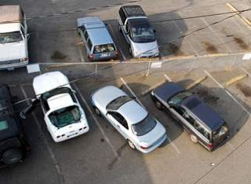
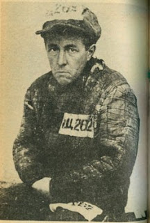

Imperial impunity: Samurai in feudal Japan were invested with Kiri sute-gomen, "authorization to cut and leave" -- a literal license to kill. Yet they were actually more accountable than police in contemporary America.
"Time to end this! Enough is enough!" With those words, Officer Troy Meade of the Everett, Washington Police Department fired seven rounds into the body of Niles Meservey, killing him instantly. At the time, Meservey was stupefied by alcohol and sitting behind the wheel of his Corvette. The car was completely boxed in by other vehicles and a chain-link fence. According to several eyewitnesses -- including another police officer -- the 51-year-old man wasn't going anywhere, and posed no threat to anyone. Meade shot the drunken man not because of any threat to himself or others; he did it because he was angry and frustrated over Meservey's non-compliance.
Just minutes earlier, Meservey had been cut off by the bartender after he had inflicted unwanted attention on a couple of women at a nearby club, briefly dragging one of them onto the dance floor.

Several people were worried about the prospect of the intoxicated man attempting to drive home when he clearly presented a risk to himself and others. One of them, Trisha Tribble, called 911.
“We’re really concerned about a guy leaving the parking lot of Chuckwagon on Evergreen Way — in a white Corvette, he’s extremely intoxicated,” Tribble told the dispatcher.
Several officers from the Everett Police Department soon arrived; among them were Troy Meade, an 11-year-veteran, and Officer Steven Klocker. Meade arrived at about 11:39 PM; Klocker reached the scene a little less than five minutes later.
By the time Officer Meade arrived, Meservey's Corvette was bracketed by cars on either side and cut off by a parking lot fence in front of him. Meade pulled up behind Meservey, effectively boxing him in.
Joanne Hancock, who was smoking outside the Chuckwagon Inn when the police arrived, went inside to share the news with others concerned about Meservey. This prompted a small group of people to go outside and watch the arrest.
By the time Klocker arrived to provide “backup,” Meade had spent roughly five minutes trying to convince Meservey to get out of the car. Klocker would later report that Meade’s tone and attitude toward the intoxicated man were “belligerent,” and that he “used language which made him uncomfortable because of the nearby civilians.”

He's a hero -- aren't they all? Officer Troy Meade, charged with murder in the shooting death of Niles Meservey.
“I don’t know why the f**k I am trying to save your dumb ass,” Meade snarled at Meservey, according to Klocker’s account.
Both Meade and Klocker withdrew their portable electro-shock torture devices (more commonly called Tasers). Meade, who was closest to the driver, shot Meservey with his Taser through the open driver’s side window, inflicting two separate strikes — one five seconds long, the other six seconds’ duration.
“Why in the f**k did you do that?” muttered the drunken man, who — predictably enough — wasn't inclined to endure any further abuse. He reached for his keys and started the car, but he had nowhere to go: The vehicle lurched over a concrete curb and ran into an unyielding chain-link fence.
Bear in mind, once again, that Meservey was entirely boxed in. It was possible, albeit with some difficulty, for Officer Meade to reach through the window and seize the car keys, rather than escalating the situation by using potentially deadly force. Had he done so, it wouldn't have been long until Meservey would have succumbed to unconsciousness.
But this would have meant exercising a modicum of patience, and doing some heavy lifting. It was more convenient to shoot the unarmed, helpless drunk. So Meade — according to Klocker's official account — took up a position near the left rear wheel of the Corvette, pulled his gun, and fired eight shots into the car.
When several other police officers arrived a few minutes later, Meade was seen pacing back and forth near the murder scene.
“I’m out of it,” he blubbered to one of the new arrivals. “I want my Garrity.”
The “Garrity Rule” — adapted from the 1967 Supreme Court ruling Garrity v. New Jersey, which involved a ticket-fixing scandal — is the legal security blanket desperately grasped by police officers who have just committed a serious crime.
Uttering the incantatory word "Garrity" triggers an enhancement of the right against self-incrimination that only the government’s armed enforcers enjoy: Any statements made thereafter can only be used for the purpose of a departmental investigation, not for criminal prosecution.
Scene of the crime: Meservey's Corvette following the lethal shooting (left); an overhead view (below, right).
Klocker, who witnessed the entire incident, pointed out to investigators that when Meservey’s body was pulled from the car, the prongs of Officer Meade’s Taser were still firmly embedded in his shoulder.
“I’m thinking as I'm dragging him … why didn’t we [shock] him again?” Klocker told investigators. If escalation had been “necessary,” Klocker thought, Meade would have used the Taser again, or resorted to pepper spray. “I would never have shot [Meservey]… I don’t think we had reached that level of force yet,” Klocker concluded.
Meservey was neutralized and not long from the comforting embrace of alcohol-induced unconsciousness. Thus it seems obvious to someone not indoctrinated in the state’s view of discretionary killing that there was no reason to use lethal force of any kind in this situation. Using the minimal force necessary to take the keys away from Meservey would have ended any threat the drunk posed to persons and property.
But Meservey had done something more serious than threaten the lives and property of other citizens; he had insulted a police officer through his persistent refusal to submit.
Meade --who was involved in a prior lethal shooting a few years ago -- vaulted up the escalation ladder from confrontational and abusive language to lethal violence within a matter of minutes. In doing so he provided a compelling illustration of the fact that every encounter between police and citizens is pregnant with deadly consequences for the latter. Though useful, such a lesson was not worth Meservey's life.


Meade was originally charged with first-degree manslaughter and placed on paid vacation (aka “administrative leave”).
Unlike a private citizen charged with lethally shooting an unarmed, non-threatening man six times in the back, Meade was set free on his own recognizance. It’s entirely likely that Meade wouldn’t have been indicted if it weren’t for rising public concern over recent police shootings in Everett.
Meade's attorney defended the murder of Niles Meservey as the result of a “split-second decision," although such manifestly was not the case. Trisha Tribble, who summoned police to the scene by calling 911, was mortified by the death of Meservey, whom she described as “this drunken guy, [who] was obviously out of his mind.” "
"There was no reason for him to die,” she commented after the slaying.
Bear in mind that Allen didn't say a police officer should never commit a crime like that; what he said, in essence, was that a police officer who commits an act of lethal violence should never be charged with a criminal offense. From this perspective, any use of deadly force by an officer is legal by definition.
The claim made by Allen on behalf of Officer Meade is a contemporary American version of what was called kirisute-gomen in feudal Japan. The phrase, roughly translated as "authorization to cut and leave," referred to the power exercised by Samurai, the Shogun's armed enforcers, to kill anyone from a lower caste who insulted them.
"Before the Meiji Restoration of 1868, there was a legal structure in place whereby people of the Samurai class or higher could kill anyone of the agrarian class or lower who insulted them," explained Dr. John Pierre Mertz, a professor of Japanese language at the University of North Carolina, in a phone interview. "The Samurai literally had the power to cut people in two, if they considered the insult to be intolerable. This was part of the culture, and people were very aware of it. In fact, there were manuals that described how a woman could clean and prepare a decapitated head for burial."
There's no reliable way of knowing how often this form of summary execution -- often referred to as burei uchi, or "striking down the impolite" -- was carried out, and what accounts exist tend to be encrusted with accumulated myth and legend.
"Understandably, very few people were willing to stick around and witness incidents of this kind," Dr. Mertz explained to Pro Libertate. "It's important to understand as well that the consequences of an act of this kind could be quite severe, since a killing of this kind was taken as evidence of failure on everybody's part to uphold the societal code. There would be an inquest, and if a Samurai were found to have killed an inferior for no good reason, he would be compelled to apologize -- which meant committing ritual suicide through seppuku. So it's likely that things of this kind happened rarely in feudal Japan."
Another historical analysis of the Edo period maintains that there was another important restraint on the power of Samurai to execute "impudent" commoners: By that account, a commoner had the absolute, innate right to use lethal force in self-defense against what we would now call police brutality.
A commoner who killed a Samurai in self-defense was not subject to punishment of any kind, since that act would have culled an unsuitable specimen from the warrior caste. A peasant targeted for execution but who escaped with his life was not tracked down and charged with "resisting arrest" or "evasion" of the police"; instead -- per this account -- the Samurai who needlessly drew his sword was subject to severe punishment for disrupting the peace.
While admitting that the existing records are scanty and ambiguous, Dr. Mertz insists that in the Japanese feudal system, only fellow Samurai or their superiors could seek retribution for criminal violence against those in lower orders. "If an Agrarian person were to lift a finger against the disciplining power, it would be a really serious thing," Mertz replied when I asked whether a peasant in that system had a right to self-defense. "Once again, it's difficult to say exactly how the laws were implemented, since there isn't a lot of detailed reporting on the subject."
Even if Japanese peasants weren't permitted to defend themselves, the dreadful penalties inflicted on Samurai who needlessly killed commoners provided a compelling deterrent against the use of unjustified violence by the enforcement caste.
This fact engenders wistful speculation: How frequently would American police resort to unnecessary force if they -- in the fashion of the Samurai -- confronted the prospect of enduring exactly what they illicitly inflict on others?
The post-1868 Japanese ruling elite was forced to abolish kirisute-gomen because the idea of empowering police to execute citizens for "impudence" was offensive to the Anglo-Saxon view of individual liberty protected by law -- the same legal tradition that begat the United States Constitution.
"After Japan was opened to the West, citizens from western nations who lived in colonial enclaves were protected by `extraterritoriality' agreements secured through British treaties," Dr. Mertz recounted to Pro Libertate. "Western governments weren't going to permit their citizens to be struck down in the streets" because they refused to genuflect to Samurai. So the Japanese revoked the enforcement caste's license to kill.
The sobering and inescapable fact is that in Lee Greenwood's America, where "at least [we] know [we're] free," the police consistently enjoy a far greater scope of official impunity than that granted to the roaming warriors of feudal Japan.
Clear and concise confirmation of that assessment comes by way of some less-than-friendly advice offered by an LAPD officer who writes for National Review under the nom-de-cyber Jack Dunphy.
In any encounter with a cop, a civilian must bear in mind that "the officer is not all that concerned with trying not to offend you," explained Dunphy. "He is instead concerned with protecting his mortal hide from having holes placed in it where God did not intend. And you, if in asserting your constitutional right to be free from unlawful search and seizure, fail to do as the officer asks, run the risk of having such holes placed in your own."
During the military occupation of the conquered South, President Andrew Johnson told his subordinates: "Whenever you hear a man prating about the constitution, spot him as a traitor." Officer Dunphy expands that totalitarian formula: A Mundane who frustrates a member of the Exalted Enforcement Caste by invoking his constitutional rights, he should be shot on sight in the interest of "officer safety" -- the highest priority and most sacred responsibility of the heroic Paladins of Public Order.

Until very recently, the laws of most states recognized the principle stated by the U.S. Supreme Court in its 1943 ruling United States v. Di Re: "One has an undoubted right to resist unlawful arrest, and courts will uphold the right of resistance in proper cases."
The right to resist unjustified police violence -- whether it takes the form of kidnapping (the proper description of an unlawful arrest) or physical assault -- is still legally recognized in a dozen states. It has been upheld in recent court decisions, most recently by Florida Circuit Court Judge John DeFuria, who ruled that homeowner John Coffin "had a right to resist" when he and his wife were violently attacked in their home by two sheriff's deputies. Nonetheless, arrests for the non-crime of "resisting arrest" are quite common. In fact, a study conducted last year by the San Jose Mercury News found that an average of three people a day were arrested for that supposed offense in that city.
Furthermore, of the 206 court cases in which "resisting arrest" was the most serious "offense," 145 -- or seventy percent -- of the cases "involved the use of force by officers." Most importantly, not a single one of the 117 complaints of unnecessary force filed with the police department's internal review board was "sustained."
Constitutional and statutory guarantees of the right to resist state-inflicted violence are otiose when those designated the "disciplining power" refuse to police themselves, and the productive class has neither the means nor the will to protect itself. This is why we've arrived at a point where police can kill innocent citizens with impunity, and yet the slightest physical contact by a citizen can be prosecuted as "battery on an officer," and a citizen wielding a flyswatter can be charged with "felonious assault" on a policeman.


Portrait of a literary hero as "Zek": Alexander Solzhenitsyn during his incarceration in the Soviet gulag (left and below, right).
Without a right to resist, we have a duty to submit -- and submission to unlawful police violence frequently results in serious injury, sexual assault, and death.
Wherever possible, resistance should be peaceful. Where violence is used it must be strictly governed by the non-aggression principle. Prudence has its proper claims to make as well: The right to resist unlawful violence may not be exercised in every appropriate circumstance, but it must be recognized as valid in all cases.
In the first chapter of The Gulag Archipelago, Solzhenitsyn offers a detailed reflection on the "cataclysm" that results when one hears an armed stranger pronounce the dreadful phrase, "You are under arrest."
"At what exact point ... should one resist?" he wrote. "When one's belt is taken away? When one is ordered to face into a corner? When one crosses the threshold of one's home?"
By the Brezhnev era, after tens of millions had been exterminated in the gulag, many Russians lamented that "submissiveness had softened our brains to such a degree" that resistance was no longer possible. All of this could have been avoided, Solzhenitsyn contended, if resistance had begun "at the moment of arrest itself."

"And how we burned in the camps later, thinking: What would things have been like if every Security operative, when he went out at night to make an arrest, had been uncertain whether he would return alive?" mused Solzhenitsyn in a famous footnote to that chapter. "Or, if during the periods of mass arrests, as for example in Leningrad, where they arrested a quarter of the entire city, people had not simply sat there in their lairs, paling with terror at every bang on the downstairs door and at every step on the staircase, but had understood that they had nothing left to lose and had boldly set up an ambush of half a dozen people with axes, hammers, pokers, or whatever else was at hand?.... The [Security] Organs would very quickly have suffered a shortage of officers ... and, notwithstanding all of Stalin's thirst, the cursed machine would have ground to a halt!"
"If ... if .... We didn't love freedom enough," he concluded. "We purely and simply deserved everything that happened afterward."
Solzenitsyn's words will be a suitable epitaph for American liberty if we do not restore, and practice, the right to resist.
(This essay is an updated adaptation of the presentation I was scheduled to make at last week's Liberty Forum in New Hampshire.)
 Be sure to tune in for Pro Libertate Radio each weekday from 6:00-7:00 PM (Mountain Time) on the Liberty News Radio Network.
Be sure to tune in for Pro Libertate Radio each weekday from 6:00-7:00 PM (Mountain Time) on the Liberty News Radio Network.
Dum spiro, pugno!
23 comments:
Will,
Yet another great essay. Your talents know no bounds I must say. Glad to hear that Justus is doing better, and hope the rest of the family is as well.
Amazing!! The SOB was actually charged with murder!!!??? Usually we have to endure the nauseating recitation of how the Law Giver heroically risked his/her life in that most danger fraught of all professions, etc., etc. Dare we pray the tide may be turning?
I wonder if this news is being reported over at Fox? I recently returned from a short trip out of state, and while cruising the brain damaged cable channels at the hotel I stayed in, was subjected to commercials proclaiming Fox to be "America's News Channel"... with all the fanfare and waving flag clips that'd make Heinrich tear up with pride. It was disgusting.
I believe the word Solzhenitsyn used to describe the passive Russian, and his behavior in the face of doom, was "rabbits". Are we, too, "rabbits"?
Trisha Tribble? Yikes. What's next? Vicky Vulcan?
Sorry, couldn't resist.
In any case, more evidence of dirtbag cops. I think jdogg is being too optimistic - the tide isn't going to turn for some time. I think this miscreant being charged with murder is just another example of a blind squirrel finding a nut once in a while.
Try to follow this one, Will. It would be wonderful to find out the dirtbag ends up in prison.
Another excellent post, Will.
Don't forget about the cop that beat up a young teenage woman in her jail cell for "kicking her shoe" at him.
The video was reminiscent of MMA fighting.
Total compliance is everything to a police officer. To do otherwise challenges his/her authority. Something as simple as asking a cop "Why?" can make an otherwise routine and peaceful encounter spiral out of control.
So much for escalation of force. Why not spray the drunk with OC and grab the keys? It could have blown back on Mead. Isn't that why cops are trained to function after being exposed to pepper spray? Go for the Taser. Just a squeeze on the trigger and watch the target dance. Easy. But not this time. More non-compliance!
Mead and his attorney have the same mindset as Blackwater operatives, that they are not accountable for their actions. I hope he is convicted and sentenced with the general population.
Full Analysis Of Criminal Conspiracy Against Citizens Must Feature Dramatic Anti-Theses--TRUTH Vs. Lies
(Apollonian, 27 Mar 10)
Grigg's article/story here is good for the journalistic reporting of details--as usual for Grigg--but there's still quite a lot missing for fullest analysis. And it rather reminds me of another similar -type story/article fm OpEdNews.com, via Alternet.com, entitled, "Are Americans Too Broken By Corporate Power To Resist?" 23 Mar 10. See http://www.alternet.org/media/146128/are_americans_too_broken_by_corporate_power_to_resist?page=entire.
And Solzenitsyn too is/was good for description and reporting, but miserable for full analysis and diagnosis. For people ONLY UNITE DECISIVELY AGAINST A NEGATIVE, and the positive ideal is only to be seen in perspective of such negative. So what's missing for Grigg's article then is fullest CONTEXT.
For u've got to have something to HATE with a passion--and the hardship has to be shared w. enough people, like MOST people--things have to get a lot worse, economically, than present, I'm afraid. And don't worry about that (things getting worse)--it's taking place steadily and surely: prices have been going up in increments so far in evermore shorter intervals.
After all, what do u expect w. a national foreign debt of over 14 Trillion buckaroos, with not even the interest capable of being paid?--yet the criminals in charge CONTINUE deficit spending on foreign wars?--against people (Iraq/Afgan, et al.) who did nothing to attack USA?--it's simply insanity and nothing but, evermore obvious to evermore citizens.
Soon prices will go up LOTS and lots, more quickly as we approach outright HYPER-inflation. And the standard of living is going down evermore surely, even if it's masked by all the recent exciting stories about Tiger Woods and dear old Britney Spears.
For things revolutionary need a substantial trigger--like the impending removal of the INTERNET--which will surely require a serious, considerable false-flag attack/atrocity, which in turn, will fool far less of the population than the top oligarchal psychopaths expect.
And note again, things aren't that difficult to discern if u make just an HONEST effort--we have a really grossly, BLATANT CRIMINAL conspiracy in effect beginning at the top, (a) led by the COUNTERFEITERS-bankers of US Federal Reserve Bank (Fed)--see RealityZone.com and TheMoneyMasters.com for expo/ref.
[-------see below for part two to above entry----------A.]
[-----------here's part two to above entry------------A.]
* * * * *
Problem w. these COUNTERFEITERS then is people's confusion upon abstractions like "capitalism" and "inflation" which not 9 in 10 understand or ever will understand for the causes--THINGS MUST BE MADE CONCRETE for broad popular comprehension--"COUNTERFEITING" then makes it clear, even for children, as to what's happening at the top, the counterfeit financing fueling everything else for deliberately contrived disaster. Thus note theme of New Testament (NT) Gosp. JOHN: Truth vs. lies.
But again, note how folks, so given to wishful-thinking, etc., are so brilliantly and sublimely distracted/diverted by the mass-corporate "Jews-media" (see http://www.natall.com/who-rules-america/index.html). And isn't Britney Spears just the cutest thing?
(b) Then, closely attached to these topmost COUNTERFEIT "artists" we have the homosexuals who must control and capture the people's children.
(c) Finally, filling out the large criminal conspiracy are the illegal alien invaders who, of course, are mostly dupes, and along then w. the illegals u have the (d) bolsheviki cadre who strive to keep the illegals and other dupes organized and mobile.
So the criminals of this large conspiracy are quite plain for exact identity, in all truth, and now there's only one additional element to the criminal problem which needs a little exposition, and that's the (e) "Judeo-Christian" (JC-see Whtt.org and TruthTellers.org for expo/ref.) hereticalist element which works for the most profound confusion lending to legitimizing of these otherwise BLATANT criminals, the JCs advocating a literally treasonous loyalty to a foreign, enemy nation, the Israeli terror-state, this even though most of these blithering JC fools are themselves most gross dupes and fools.
So there u have it: it's actually simple matter of CRIMINALS vs. confused, demoralized citizens horrifically affected w. a profound psy-ops subversion of their poor little TV-addicted mentalities.
CONCLUSION: And the great MISSING ELEMENT, once again, for the recovery of betrayed citizens is that necessary and righteous HATRED which will otherwise UNIFY the so-far horribly victimized people against a common, discernable enemy (TRUTH vs. lies). Therefore the observer of all this degenerate activity can only conclude THINGS MUST GET EVERMORE WORSE in order for the erstwhile fools of the "civilization" to finally figure things out enough regarding the blatant CRIMINAL CONSPIRACY going on in front of their very faces. But if the morons don't do something fairly soon, there might not be a civilization or even much of a surviving population left to save. Honest elections and death to the Fed. Apollonian
"Officer Troy Meade originally was charged with first-degree manslaughter in the case, but prosecutors Thursday filed an additional charge of second-degree murder in Snohomish County Superior Court.
A second-degree murder charge means that prosecutors believe the defendant intended to kill the victim, and it carries a higher penalty than a manslaughter conviction."
So regardless of his defense attorneys mewlings it appears they have the witnesses to prove he intended to kill the man and not out any pathetic "self defense" argument.
Amazing!! The SOB was actually charged with murder!!!???
Only because there were witnesses to the act. Frankly, I'm surprised they weren't summarily intimidated into silence by Meade's fellow blue-clad gangbangers, or simply liquidated along with Mr. Meservey.
Even mention this sort of this incident to the sheeple, and most of them will begin bleating in unison:
"But he's a cop..."
"Better to NOT resist..."
"Violence begats violence..."
"Do what you're told..."
"Ba ba ba ..."
It is my sincere hope that this useless blob of disgusting protoplasm is tried, sentenced and is given what he deserves in prison, it being obvious he will not get what he truly deserves from the state he serves - the death penalty - for his actions against an unarmed, incapacitated citizen for the flimsy reason that "he lost it".
Screw him. It is my fervent hope that justice prevails, in or out of prison, for this despicable faux human being.
Probably the most shocking part of this story is the fact that another LEO actually testified against his fellow LEO. Officer Steven Klocker deserves kudos for that. Usually the brotherhood of blue circles the wagons and protect each other no matter what. Although he probably had no choice what with all the other witnesses.
One thing that drives me nuts in these cops gone bad stories is when people are referred to as "civilians". We are not civilians - we are CITIZENS!!!! Using the word civilian best demonstrates the absolute militarization of all law enforcement. The psychological impact between using the word civilian and the word citizen is profound, both for the police and for us mundanes.
I actually do think the tide is turning.
Personal story:
I was walking in the park yesterday and a cop rolled up behind me and yelled at me
"hey!"
"What" I said and turned around
"Oh, you're not who we want" He said
"You got that right!" I said
"We're looking for someone and you're not him" (looking at me oddly)
"No Kidding" I said
He then proceeded to tell me how he was looking for someone fitting my description but with a slightly different jacket.
"Great, well go do your cop stuff and find him." I said
Somewhat perturbed he drove off...
A lady sitting in her car witnessed the whole incident and asked what happened, when I explained, she said that she wasnt surprised, that she thought cops made up excuses to harrass people, and that soon their was going to be a backlash. I told her I hoped so.
Meade deserves execution by lethal injection. That said he'll never get what he deserves. I hope Meade does get acquainted with his feminine side with Bubba sodomizing him repeatedly day after day.
ANY government agent not upholding his oath of office is your enemy.
...How frequently would American police resort to unnecessary force if they -- in the fashion of the Samurai -- confronted the prospect of enduring exactly what they illicitly inflict on others?
The problem is that in order for resistance to unlawful arrest to succeed, the resisting citizen would in most cases require “backup” of his or her own from sympathetic fellow citizens sufficient in number and sufficiently armed to resist the platoons of paramilitary gang-banging thugs that the blue-clad gangster coward (or pair of cowards) making the arrest will summon without hesitation once they realize they're outnumbered and outgunned. Sadly, this is almost never possible. Even in the event that a false arrest/felonious assault by a cop takes place in the presence of citizen witnesses, not only do most witnesses lack sufficient intestinal fortitude or love of liberty to provide backup to their hapless fellow citizens, they are also always either unarmed or insufficiently armed to battle the militarily-equipped backup legions.
More commonly, however, is the fact that the odds of any citizen suffering a false arrest, and the violence that attends it, encountering anything among his fellow citizens other than compliant, authoritah-worshiping sheeple who will genuflect in terror before a blue-clad street-thug are something in the negative number range.
Probably the most shocking part of this story is the fact that another LEO actually testified against his fellow LEO. Officer Steven Klocker deserves kudos for that.
No, actually he doesn't. Kudos are for officers who STEP IN AND STOP THEIR FELLOW “HEROES IN BLUE” FROM COMMITTING VIOLENT CRIMES IN THE FIRST PLACE AND PREVENTING UNNECESSARY DEATH OR INJURY TO THE CITIZENS THEY “SERVE.” Steven Klocker did no such thing. At best, he mumbled a mealy-mouthed protest at his pscychopath comrade's murderous depredations as they occurred, clearly afraid to do anything stronger for fear of retaliation by either Troy Meade or the Thin Blue Wolf Pack that showed up as backup. Sure, “testifying” against Meade after the fact is a nice “cheap grace” move, but a more proactive and courageous response when the crime was actually occurring would have saved a man's life. But we all know that this is far too much to expect from anyone inside the Fat Blue Line Gang.
Hi
Wow this is a great piece ! It was a brilliant comparison of the modern paramilitarized cop and mislabeled American 'peace officer' with the Samurai of old..
It struck a nerve with my situation - being tasers and shot is about all I have yet to endure
I have found that trying to assert your rights and to fight for the rights of others can be dangerous and costly where I live
I am currently involved in a fight for my home due to harassment that started with a connected employee of the most powerful law firm in St Louis County, Missouri . That woman was able to use that connection to get politically connected local police - who are assigned and basically in control of a local Muni Court involved This goon squad has made my life a nightmare. I have been threatened, terrorized , police trying to break down my door without a warrant or ordinance violation; they have stolen my property, trespass at will , they have called credit bureaus damaging my credit, spent thousands of tax payer dollars trying to force me to move - they have even had me falsely arrested, and have basically bankrupted me fighting - all while the local precinct police just say there is nothing they can do unless I catch the other cops on tape and local lawyers tell me that they can't sue cops or they themselves fear their own retaliation ?? It has been maddening...
I am being forced to move and will lose everything and have already had to cash in my IRA early - I am a women alone - and I have found other women these men have terrorized but local precinct and pols and media just shrug
I even had a new job and new land and graduate school plans set last year - ready to surrender and simply move to a safer, saner rural area - but a year later I sit here still fighting - they apparently had to bankrupt me as well as force me to flee... I assume they felt broke that I would have to stop any legal effort and they had threatened that if I defied them or fought them - I would wind up penniless and homeless and they are close to succeeding
It is in the same area where the man lost his mind a year or so ago after similar harassment for five years - broke - and broken - he took a gun to city hall killing six before he was killed
Even with that background - local cops and media and pols - refuse to investigate any police misconduct and merely turn a blind eye and a deaf ear to harassment or abuse
Of course this is the same media and police force and pols who knowingly turned their back on the priest pedophilia scandal for decades and where police profile and use tasers like toys and bigotry is the norm.
I would love to see if you have any ideas where I can find some legal precedence or ideally legal help ...
PS I was glad to read your profile description - I was heartened to see you care about faith and family as well as justice - sadly , I have no family here but frankly if it weren't for my faith I would have give up long ago .. I took care of my late parents 24/7 at home before they past - my dad bed ridden for five years but without one bed sore - thanks to God's help ! I worked as a respected professional at McDonnell Douglas for almost 15 years before caring full times for my parents - so I am not some 'trouble maker' or lazy or crazy 'old maid' at 51 = merely some one who has always been a hard working tax payer who never missed a vote and thought I was protected by the Bill or Rights and due process of law ..
I never expected to live in fear of my 'own' police and to find that the law refuses to protect a citizen if a police officer or a connected person has targeted you - you can and will have your rights , your assets, your home, your freedom, and possibly your life taken while they have impunity and the full legal weight and tax payer funds to use and abuse while you go bankrupt ....
I would appreciate any advice you might have
Thank you
Carolyn Rose Goyda
rosegojda@aol.com
"The right to resist unjustified police violence -- whether it takes the form of kidnapping (the proper description of an unlawful arrest) or physical assault -- is still legally recognized in a dozen states"
I think this is a key note that people need to be aware of. There are many states where there is no right to resist an unlawful act by a police officer acting in his or her official capacity.
For example, in Wisconsin Appeal Court's State v Haywood the court ruled that, in cases where battery on an officer are charged, the defendant does not have a right to resist an unlawful action by an officer so long as that officer is within his or her jurisdiction and acting on police business.
So, indeed, in some states out there it is your duty to submit to an unlawful action by law enforcement and failure to do so is punishable by the full force of law.
The new samurai indeed.
"We were never more free than under the German Occupation. We had lost all our rights, above all, the right to speak; we were insulted daily and had to remain silent, we were deported, because we were workers, because we were Jews, because we were political prisoners. All around us on the walls, in the newspapers, on the screen, we met that foul and insipid image that our oppressors wanted us to accept as ourselves. Because of all of this we were free. Since the Nazi poison was seeping into our thinking, each accurate thought was a victory; since an all-powerful police was trying to force silence upon us, each word became precious as a declaration of principles, since we were hunted, each gesture had the weight of a commitment. The often frightful circumstances of our struggle enabled us finally to live, undisguised and unconcealed, that anxious, unbearable situation which is called the human predicament." - Jean-Paul Sartre
As to the charge of being arrested for "resisting arrest" it happened to my husband back in 1993, in Texas (naturally, law enforcement trumps all in Texas!) and was arrested for absolutely no reason at a BP check point in Sierra Blanca, coming home from El Paso. For no reason!
I remember reading your post on the cops in Bakersfield...former Miami Dolphin linebacker Joey Porter, who was arrested for DUI and supposedly "struck" an officer there, is now having an investigation of police brutality by that cop he supposedly "struck." Porter is a Bakersfield native, and might have enough clout to see that some sort of justice is done to these corrupt cops. It is too bad you have to be an NFL linebacker or other star player to "be the wrong person" to screw around with.
clearly, my husband was not the "wrong person" to screw around with!
Liberranter, your point about Klocker not getting kudos because he should have prevented the murder is well taken. However, keep in mind we do not have all the details, e.g., was Klocker in a physical position to stop Mead, or mentally prepared for such an incidence, or how quickly the shooting took place, etc. From the time Mead said that enough is enough (possibly at the same time he was drawing his pistol), to the time he squeezed out the seven rounds would be maybe 5 seconds. Anyone here who thinks they can react properly to stopping such an occurrence in five seconds is fooling themselves. It is easy to Monday morning armchair quarterback these situations but we must stay within the realm of reality based judgment. But make no mistake about it - Mead's actions certainly point to murder.
Actually the magic word is Kalkines, not Garrity. Garrity actually is a magic word that is the opposite of Kalkines.
Post a Comment